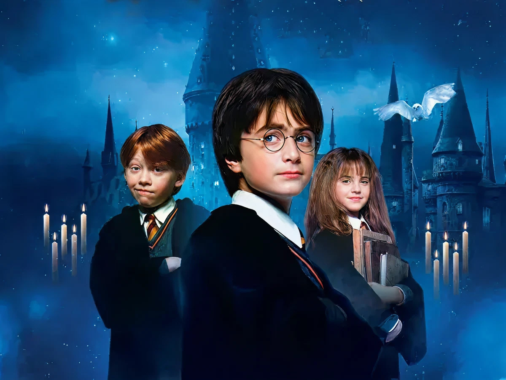

● About Harry Potter
해리 포터는 J.K. 롤링의 소설 시리즈 '해리 포터'의 주인공으로, 어린 시절 부모를 잃고 이모 집에서 자라다가 자신이 마법사라는 사실을 알게 된다. 이후 호그와트 마법학교에 입학하여 다양한 친구들과 함께 성장하며 어둠의 마법사 볼드모트와 맞서 싸운다.

해리 포터와 그의 친구들
● Harry's Characteristics
- 용감하고 정의감이 강하다.
- 친구를 매우 소중히 여긴다.
- 위험한 상황에서도 쉽게 포기하지 않는다.
● Harry's Friends
해리에게는 항상 함께하는 소중한 친구들이 있다. 특히 론과 헤르미온느는 어떤 상황에서도 해리를 도와준다.
- 론 위즐리
- 헤르미온느 그레인저
- 루베우스 해그리드
● More About Harry Potter
더 많은 이야기와 설정이 궁금하다면 harrypotter.com에서 확인할 수 있습니다.